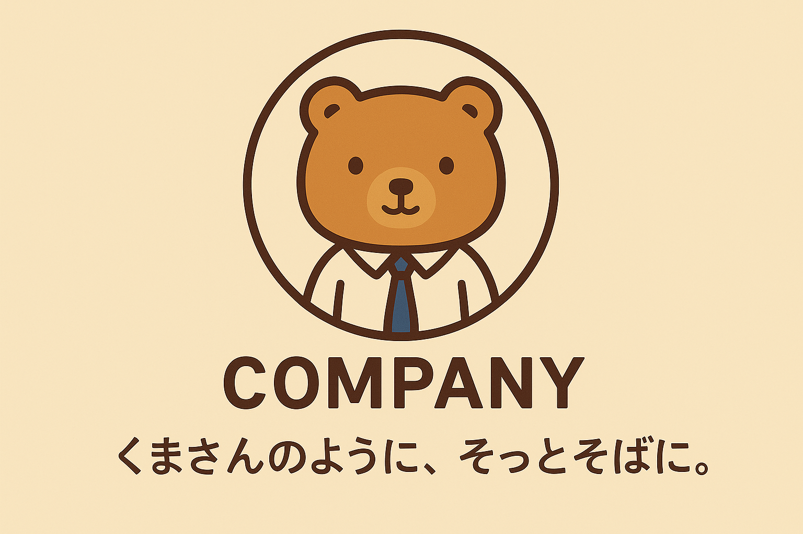

名前の由来
🧸くまさんのように、そっとそばに。
株式会社くまさん🧸ソリューションズの名前には、私たちの目指す姿勢と思いが込められています。
くまのぬいぐるみは、子どもから大人まで多くの人にとって「安心」と「やさしさ」の象徴です。そっと寄り添い、話を聞き、ただそこにいてくれる存在――それが「くまさん」のイメージです。
私たちも、そんな「くまさん」のように、お客様のそばに寄り添い、静かに、しかし確かに支え続ける存在でありたいと願っています。
急かしたり、押しつけたりせず、必要なときに、必要なかたちでサポートを届ける。人のあたたかさを感じられるようなソリューションを提供する。
そんな思いから、私たちは「くまさん」という名前を社名に選びました。

🧸「くまさんのように、そっとそばに。」この言葉は、私たちの約束であり、理念です。